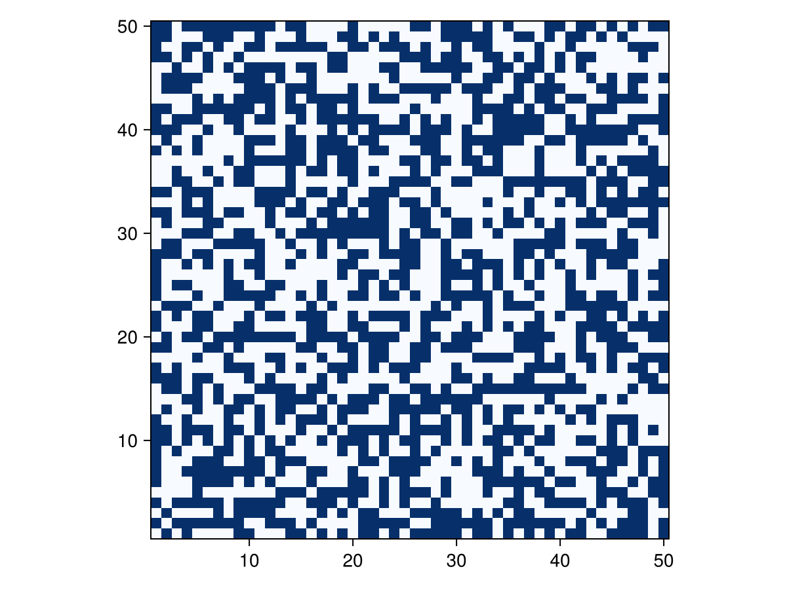

Stencil operations
A stencil is the common term for computing many-to-one operations on grids. Examples of applications are:
- Finite difference schemes
- Finite Impulse Response (FIR) filters
- Convolutions (encompassing the previous two)
- Cellular Automata
Note that for larger convolution kernels, it is often more efficient to perform convolutions in the Fourier domain. On the matter of performance: stencil operations are the textbook example for computations that perform really well on GPUs.
Implementation
Using these helper functions we can now define a stencil operation. Given the boundary trait, a stencil size and a response function, we can transform an array to a next generation.
function stencil(::Type{TIn}, ::Type{TOut}, ::Type{BT}, n::NTuple{dim,Int}, f::Function) where {TIn, TOut, dim, BT <: Boundary{dim}}
m = n .÷ 2
stencil_shape = range.(.-m, m)
stencil = Array{TIn, dim}(undef, n...)
function(z_in::AbstractArray{TIn, dim}, z_out::AbstractArray{TOut, dim}, args...)
@assert (size(z_in) == size(z_out)) "sizes of arrays need to be equal"
shape = size(z_in)
for i in CartesianIndices(shape)
for (k, Δi) in enumerate(CartesianIndices(stencil_shape))
stencil[k] = offset_value(BT, z_in, i, Δi)
end
z_out[i] = f(stencil, args...)
end
end
end
stencil(::Type{T}, ::Type{BT}, n::NTuple{dim, Int}, f::Function) where {T, dim, BT <: Boundary{dim}} =
stencil(T, T, BT, n, f)
convolution(::Type{TIn}, ::Type{TOut}, ::Type{B}, kernel::AbstractArray{U, dim}) where { dim, TIn, TOut, U, B <: Boundary{dim} } =
stencil(TIn, TOut, B, size(kernel), s -> sum(s .* kernel))
convolution(::Type{B}, kernel::AbstractArray{T, dim}) where {dim, T, B <: Boundary{dim}} =
stencil(T, T, B, size(kernel), s -> sum(s .* kernel))More efficient implementations are imaginable. For instance we could use normal unchecked indexing for most of the array, and only use the offset_value function when we really need it. Another optimisation could be to generate parts of the inner loop, and/or do the outer loop in parallel.
We will now test this function first on an Elementary CA (ECA), Conway's Game of Life, and a convolution.
Stencil module
module Stencil
using ..Boxes: AbstractBox
using ..BoundaryTrait
export stencil, convolution
<<stencil-operation>>
endExamples
Elementary Cellular Automata
An Elementary Cellular Automata is a one-dimensional CA with two states. Every next generation depends on the direct neighbourhood of three cells. Since there are $2^3 = 8$ patterns and two outcomes for every pattern, there are $2^8 = 256$ possible ECA.
#| creates: docs/src/_fig/eca.png
#| requires: src/Stencil.jl
#| collect: figures
module ECA
using CarboKitten.BoundaryTrait
using CarboKitten.Stencil
using CairoMakie
rule(i::Int) = function (foo::AbstractVector{T}) where T <: Integer
d = foo[1]*4 + foo[2]*2 + foo[3]
i & (1 << d) == 0 ? 0 : 1
end
function eca(r::Int, n::Int, iter::Int)
y = Array{Int}(undef, n, iter)
y[:, 1] = zeros(Int, n)
y[div(n, 2), 1] = 1
stencil_op = stencil(Int, Periodic{1}, (3,), rule(r))
for i in 2:iter
stencil_op(view(y, :, i-1), view(y, :, i))
end
y
end
function plot()
fig = Figure(size=(1200,400))
for (idx, r) in enumerate([18, 30, 110])
ax = Axis(fig[1,idx]; title="rule $(r)", yreversed=true, limits=((1, 256), (1, 128)))
heatmap!(ax, eca(r, 256, 128); colormap=:Blues)
end
save("docs/src/_fig/eca.png", fig)
end
end
ECA.plot()
Even these one-dimensional CA show highly complex behaviour. For instance, it has been shown that rule 110 is Turing complete.
Game of Life
Perhaps the most famous CA is Conway's Game of Life. This is a two-dimensional two-state (dead/alive) CA, with the following rules: a cell is alive in the next generation if it is alive and has two neighbours or if it has three neighbours; in all other cases the cell is dead.
#| creates: docs/src/_fig/life.gif
#| requires: src/Stencil.jl
#| collect: figures
module Life
using CarboKitten.BoundaryTrait
using CarboKitten.Stencil
using GLMakie
using .Iterators: take
"x is a 3x3 region around the cell at x[2,2]."
rules(x) = let c = x[2, 2], s = sum(x) - c
c && s == 2 || s == 3
end
function game_of_life(w, h)
y1 = rand(Bool, (w, h))
y2 = Array{Bool}(undef, w, h)
op = stencil(Bool, Periodic{2}, (3, 3), rules)
Channel() do ch
put!(ch, y1)
while true
op(y1, y2)
(y1, y2) = (y2, y1)
put!(ch, y1)
end
end
end
function plot()
life = take(game_of_life(50, 50), 150)
fig = Figure()
ax = Axis(fig[1,1], aspect=1)
record(fig, "docs/src/_fig/life.gif", life; framerate=10) do frame
heatmap!(ax, frame; colormap=:Blues)
end
end
end
Life.plot()
Testing boundaries with a convolution
To test the different boundary types, lets try the following setup. We take a 16x16 image with all zeros except the bottom left gets a value of 1 and the top right pixel gets a value of 2. Now convolve with a Gaussian and see what happens. For the constant boundary, I've set the value to 0.1, to see the effect.

Notice, that for the periodic boundaries, the bottom left and top right are neighbouring. So there the two pixels appear as a single peak. In the reflected case we see a clear distinction between the two corners.
#| creates: docs/src/_fig/boundary_types.png
#| requires: src/Stencil.jl
#| collect: figures
module Script
using CarboKitten.BoundaryTrait
using CarboKitten.Stencil
using CairoMakie
function plot_boundary_types()
n = 16
y0 = zeros(Float64, n, n)
y0[1, 1] = 1
y0[n, n] = 2
x = collect(-2:0.25:2)
k = exp.(-(x.^2 .+ x'.^2))
k ./= sum(k)
y_periodic = Array{Float64}(undef, n, n)
convolution(Periodic{2}, k)(y0, y_periodic)
y_reflected = Array{Float64}(undef, n, n)
convolution(Reflected{2}, k)(y0, y_reflected)
y_constant = Array{Float64}(undef, n, n)
convolution(Constant{2, 0.1}, k)(y0, y_constant)
fig = Figure(size=(900, 300))
for (i, y) in enumerate([y_periodic, y_reflected, y_constant])
ax = Axis(fig[1,i]; aspect=1)
heatmap!(ax, y; colormap=:viridis)
end
save("docs/src/_fig/boundary_types.png", fig)
end
end
Script.plot_boundary_types()